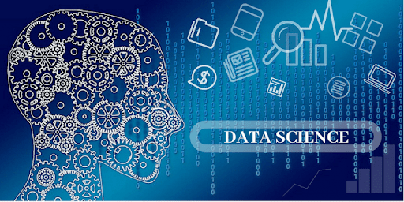

User Experience (UX) merupakan proses mendesain suatu produk melalui pendekatan pengguna.
Dengan pendekatan ini, Anda jadi bisa menciptakan produk yang sesuai dengan kebutuhan dan keinginan pengguna.
Produk dengan desain UX yang baik akan menciptakan pengalaman yang menyenangkan bagi pengguna saat menggunakan
produk Anda. Pengguna jadi mudah dan nyaman saat menggunakan produk.Adapun, komponen UX ini meliputi
bagaimana fitur-fitur yang disediakan pada produk, struktur desain, navigasi penggunaan produk, aspek visual design,
dan seluruh aspek interaksi dengan pengguna.
UX juga meliputi bagaimana Anda menentukan branding, konten, dan belajar copywriting yang sesuai dengan target pengguna Anda.
Apa itu UI?
Seperti yang disebutkan sebelumnya, UI adalah bagian dari UX yang berupa tampilan visual design sebuah sistem.
Tampilan tersebut memungkinkan pengguna terhubung dan berinteraksi dengan suatu produk.Selain berfungsi sebagai penghubung,
UI juga berfungsi untuk memperindah tampilan sehingga dapat meningkatkan kepuasan pengguna. Namun, tak hanya harus indah,
UI juga harus mudah digunakan.Beberapa komponen UI diantaranya adalah komponen tombol, ikon tipografi, tema, layout, animasi yang
tampil pada produk, dan visual interaktif lainnya. Semua komponen UI tersebut didesain dengan berfokus pada keindahan dan kemudahan pengguna.
Jadi, pengguna dapat menikmati produk Anda.
Data Science

Pengertian Data Science
Ilmu data alias data science merupakan fokus studi yang berhubungan dengan besarnya volume data menggunakan teknik
modern demi menemukan pola-pola tak terlihat, mendapat informasi bermakna, serta membuat keputusan bisnis dengan informasi tersebut.
Algoritma pembelajaran mesin yang kompleks digunakan dalam data science untuk membangun model yang prediktif. Adapun, data yang
digunakan untuk analisis bisa berasal dari bermacam sumber dan tampak dalam berbagai format.Data science termasuk topik diskusi yang
benar-benar luas dan dengan subjektivitas yang kental. Data science sendiri, menurut definisinya, bukanlah suatu ilmu yang berdiri sendiri.
Ia merupakan kombinasi dari berbagai bidang, khususnya matematika, ilmu komputer, strategi bisnis, sampai statistik.
Terdapat tiga komponen yang terlibat dalam data science, yakni organising, packaging, dan delivering data atau The OPD of Data.
Untuk organising data sendiri ialah proses penyimpanan data yang kemudian digabungkan dengan manajemen data.Sementara itu, packaging
data adalah proses manipulasi dan penggabungan berbagai data mentah yang nantinya dipresentasikan. Selanjutnya, delivering data
merupakan proses memastikan pesan dalam data sudah diakses oleh pihak yang memerlukan.Dengan adanya peningkatan aliran data yang
drastis ini, alat-alat baru yang bisa digunakan untuk memanfaatkan data mentah dengan tepat akan muncul.
Cakupan dari data science sendiri ialah alat, teknik, sampai teknologi yang bakal membantu kita menangani meningkatnya aliran data itu sendiri.
Ini adalah perpaduan interdisipliner antara penurunan data, pengembangan algoritma, serta teknologi demi memecahkan masalah analitik yang
sangat-sangat kompleks.
Mobile Programming
Pemrograman Mobile
Pemrograman mobile merupakan gabungan antara kata “pemrograman” dan “mobile“. Istilah lainnya yaitu mobile programming.
Pemrograman mobile adalah pemrograman yang ditujukan untuk membuat aplikasi di perangkat mobile.
Banyak sekali platform mobile yang dapat kita coba, di antaranya iOS, BB RIM, J2ME, QT Mobile, Symbian, dan Android.
Jika ingin membuat sebuah aplikasi mobile, maka teman-teman wajib mengetahui sebuah bahasa pemrograman untuk membuatnya.
Tidak semua bahasa pemrograman bisa kita gunakan untuk membuat aplikasi mobile.
Nah, berikut ini adalah beberapa bahasa pemrograman yang bisa kita pakai untuk membuat aplikasi mobile, yaitu :
Java
Kotlin
Swift
Objective-C
Web Programming
Pengertian Pemrograman Web
Pemrograman web adalah proses pembuatan instruksi-instruksi untuk menciptakan program/aplikasi berbasis internet yang dapat
diakses melalui browser. Contoh dari pemrograman web itu sendiri yakni: gmail, facebook, tumblr, dll.
Dapat dikatakan bahwa pemrograman web berkaitan dengan pembuatan situs, namun levelnya berada di atas sekedar menyusun kode-kode HTML
sederhana. Pemrograman web mencakup perencanaan, konseptualisasi, pemodelan pengiriman media elektronik melalui internet.
Bahkan pemrograman web yang baik mencakup pembuatan panel kontrol yang efektif sehingga pemilik situs web dapat memilki kontrol
terhadap situsnya, terkait konten, aplikasi, dan aspek pendukung lainnya.
Untuk mengenal pemrograman web lebih dalam, kita perlu memahami jenis-jenis website.
Bahasa Pemrograman Web
Bahasa pemrograman ialah kata-kata yang berperan sebagai instruksi yang dimengerti oleh komputer.
Bahasa pemrograman merupakan ilmu yang wajib dikuasai oleh web designer untuk membuat sebuah website atau aplikasi.
Berikut ini merupakan beberapa contoh bahasa pemrograman yang lazim digunakan dalam pemrograman web:
HTML: HTML merupakan dasar pembuatan setiap website. Untuk membentuk sebuah website, HTML berperan dalam pembentukan struktur halaman website.
CSS: CSS merupakan kunci yang membedakan sebuah website dengan website yang lain, karena CSS berfungsi untuk membuat tampilan laman menjad lebih menarik.
PHP: PHP merupakan server side scripting yang digunakan untuk memprogram dan mengembangkan sebuah situs, biasanya digunakan bersama HTML. PHP dirancang untuk pembuatan website dinamis.
JAVA SCRIPT: Java script berguna bagi kalian yang membutuhkan fitur interaksi pada website kalian, sehingga website dapat secara aktif menjadi media interaktif.
Bahasa Pemrograman yang juga populer digunakan dalam dunia programming yaitu PYTHON, JAVA, C, RUBY, dan PERL.
Game Development
Pengertian Game Development
Game development adalah proses menciptakan dan mengembangkan video game. Game development melibatkan komponen-komponen
seperti perancangan konsep game design, baik level design, gameplay, maupun mekanisme game, serta pembuatan desain asset visual dan
audiovisual game. Kemudian konsep dan desain direalisasikan dengan coding dan programming. Game developer menyatukan komponen-komponen
desain dan coding tersebut menjadi sebuah prototype lalu mengembangkannya menjadi video game melalui sebuah Game Engine.
Game developer biasa berkisar dari satu orang atau satu tim kecil yang disebut Indie developer, hingga ke satu perusahaan besar